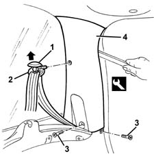
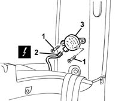
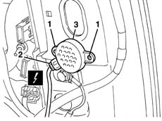

5580H12 PARKING OBSTACLE DETECTION DEVICE BUZZER - R R
- Path
- Procedures > 55 ELECTRICAL EQUIPMENT > 5580 SPECIAL ACCESSORIES > 5580H PARKING OBSTACLE DETECTION DEVICE > 5580H12 PARKING OBSTACLE DETECTION DEVICE BUZZER - R R
- Kind
- repair procedure (removal / refitting; the operation number is the code)
- Applies to
- all engines; all production periods
- Interactive page
- https://sloeber94.github.io/elrnDB-fMltpl/en/#/2891993
Applies to: all engines; production: fino a 05/99, da 06/99 a 03/02
 Removing
Removing
 Refitting
Refitting1. Remove the embellishment.
2. Undo and remove the intermediate linkage mechanism.
3. Undo the bolts.
4. Remove the pillar trim from the internal retainers using the appropriate tools.
 | Name | Country |
|---|---|---|
4 | Scraper blade | 1.878.077.000 |

Applies to: all engines; production: fino a 05/99, da 06/99 a 03/02
1. Undo the bolts.
2. Disconnect the electrical connection.
 | Name | Connector |
|---|---|---|
2 | Parking sensor speaker |
3. Recover the buzzer.

Applies to: all engines; production: fino a 05/99, da 06/99 a 03/02
Refitting
RemovingCheck that the buzzer is not damaged and, if necessary, conduct an electrical test on it.
Connect the electrical connection.
Position the buzzer and secure it using the bolts.
Fit the pillar cover on the internal retainers and secure it using the bolts.
Tighten the bolt securing the seat belt intermediate linkage mechanism.
 | Fastening | Component | Ø | Value (daNm) |
|---|---|---|---|---|
- | Bolt | REAR SEAT BELT IDLER.. | - | 40 |
Fit the trim.
Check the operation of the buzzer.
Applies to: all engines; production: da 09/03, da 04/02 a 08/03, da 06/04, fino a 05/04
Removing
Refitting7040B18 l/h or r/h side trim (one) of luggage compartment/load platform - arrange
Connect the electrical connections.
1. Undo the bolts.
2. Disconnect the electrical connection.
| Name | Connector |
|---|---|---|
2 | Parking sensor speaker |
3. Recover the buzzer.

Applies to: all engines; production: da 09/03, da 04/02 a 08/03, da 06/04, fino a 05/04
Refitting
RemovingCheck the buzzer is undamaged.
Place the buzzer in position.
Connect the electrical connection.
Tighten the bolts.
7040B18 l/h or r/h side trim (one) of luggage compartment/load platform - arrange
Connect the electrical connections.
Check that the buzzer is working.